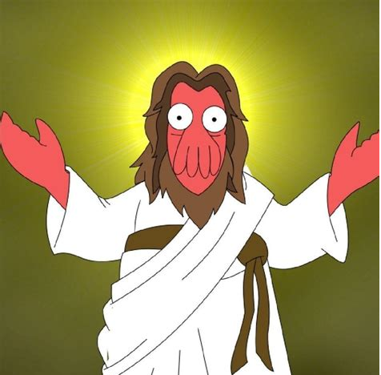

Player Characters
Arthur Dent (Cameron)

Born: Appolo, Gliese 581 (2605CE / 30,615GC / 128 ALT)
Born on the Federal world of Appolo (Gliese 581c). Throughout his childhood he excelled at engineering and space based navigation. His family visited earth once when he was aged 11, this was a profound experience for Arthur. At the age of 18 he applied to the Sirius Naval Engineering Acaddemy graduating 3 years later as a ships engineer.
He served 2 tours of 2 years, the first tour was a Anti-Piracy campaign thourghout the frontier sector of Andreus. His second tour he was involved in the Federal Intervention on the pre-space travel planet of Krikorin (located on the edge of Explored Space).
Following the Kirkorin campaign he was re-assigned to the newly created Federal-subject of the Krikorin Provisional Government (class II Association) to assist in the development of there space based infastrucutre.
At the age of 28 he resigned his commision leaving the Terran navy to work as a ships engineer for cargo haulers in the frontier.
He returned to Appolo twice to see his family since then he has not been back.
He is traditionally votes for the Democratic-Liberal Party of the federation, and supports Federal withdrawel from the Coalition of Interstellar Nations.
Seraphina (Elizibeth)

insert weird al mysterious gif
Lili Fasketel (Angela)

Frog racist????
Slognog (Sam)

Space Slug extrodinair
Yuuki Isaiah (John)

Anime stuff presumably
Space God (Cora)

its the space god, dun dun dun!